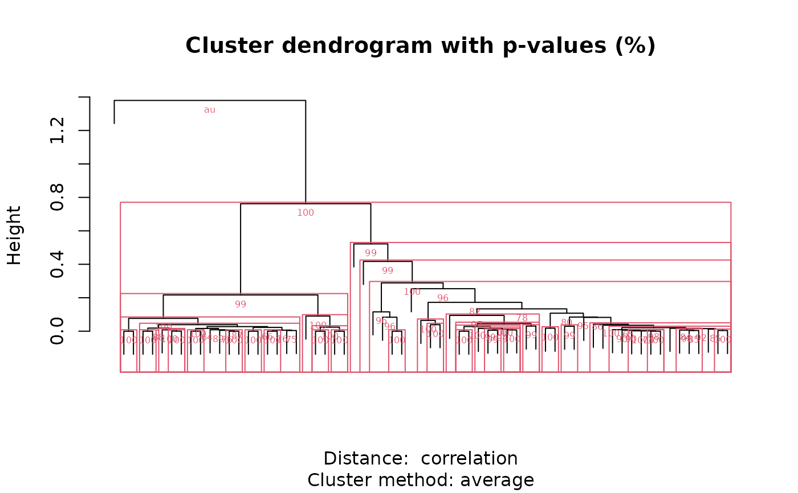
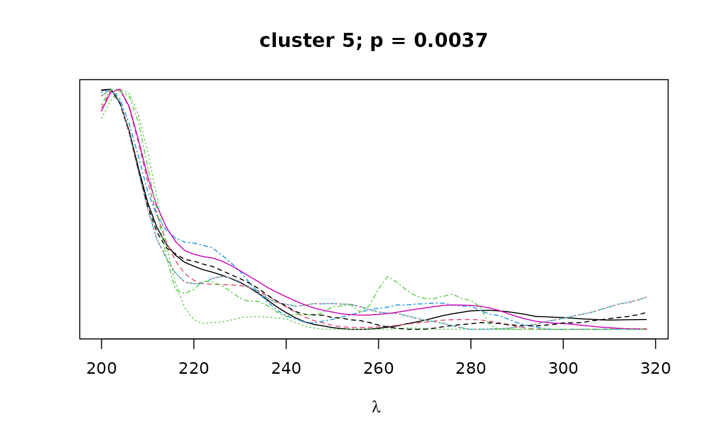
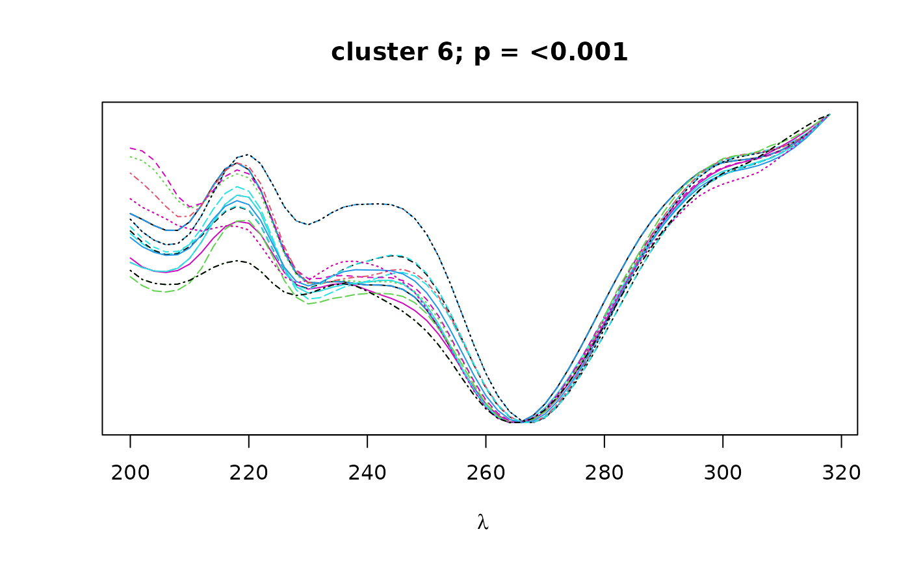
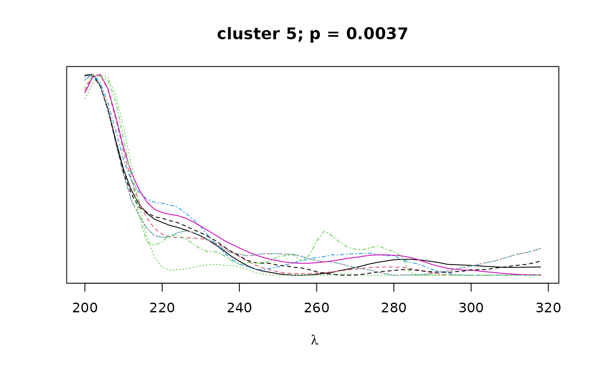
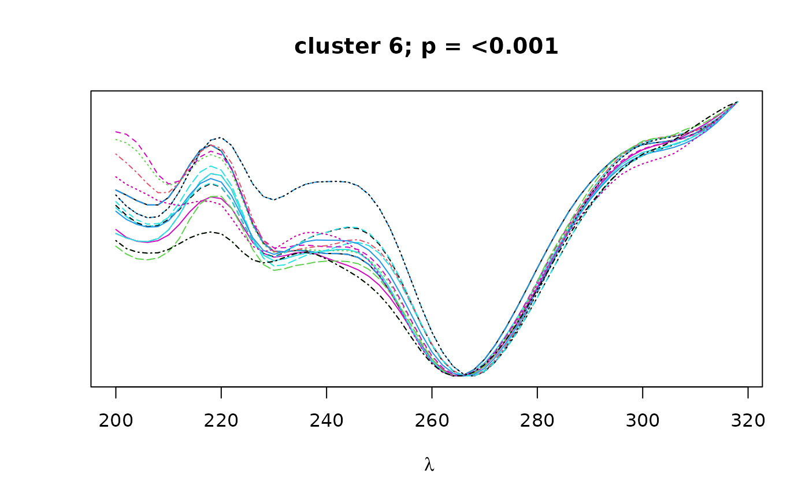

Cluster peaks by spectral similarity.
Arguments
- peak_table
Peak table from
get_peaktable.- peak_no
Minimum and maximum thresholds for the number of peaks a cluster may have. This argument is deprecated in favor of
min_sizeandmax_size.- alpha
Confidence threshold for inclusion of cluster.
- min_size
Minimum number of peaks a cluster may have.
- max_size
Maximum number of peaks a cluster may have.
- nboot
Number of bootstrap replicates for
pvclust.- plot_dend
Logical. If TRUE, plots dendrogram with bootstrap values.
- plot_spectra
Logical. If TRUE, plots overlapping spectra for each cluster.
- verbose
Logical. If TRUE, prints progress report to console.
- save
Logical. If TRUE, saves pvclust object to current directory.
- parallel
Logical. If TRUE, use parallel processing for
pvclust.- max.only
Logical. If TRUE, returns only highest level for nested dendrograms.
- output
What to return. Either
clustersto return list of clusters,pvclustto return pvclust object, orbothto return both items.- ...
Additional arguments to
pvclust.
Value
Returns clusters and/or pvclust object according to the value
of the output argument.
If
output = clusters, returns a list of S4clusterobjects.If
output = pvclust, returns apvclustobject.If
output = both, returns a nested list containing[[1]]thepvclustobject, and[[2]]the list of S4clusterobjects.
The cluster objects consist of the following components:
peaks: a character vector containing the names of all peaks contained in the given cluster.pval: a numeric vector of length 1 containing the bootstrap p-value (au) for the given cluster.
Details
Function to cluster peaks by spectral similarity. Before using this function,
reference spectra must be attached to the peak_table using the
attach_ref_spectra function. These reference spectra are then used to
construct a distance matrix based on spectral similarity (pearson correlation)
between peaks. Hierarchical clustering with bootstrap resampling is performed
on the resulting correlation matrix to classify peaks by spectral similarity,
as implemented in pvclust. Finally, bootstrap
values can be used to select clusters that exceed a certain confidence
threshold as defined by alpha.
Clusters can be filtered by the minimum and maximum size of the cluster using
the min_size and max_size arguments respectively. If
max_only is TRUE, only the largest cluster in a nested tree of
clusters meeting the specified confidence threshold will be returned.
Note
Users should be aware that the clustering algorithm will often return nested clusters. Thus, an individual peak could appear in more than one cluster.
It is highly suggested to use more than 100 bootstraps if you run the clustering algorithm on real data even though we use
nboot = 100in the example to reduce runtime. The authors ofpvclustsuggestnboot = 10000.
References
R. Suzuki & H. Shimodaira. 2006. Pvclust: an R package for assessing the uncertainty in hierarchical clustering. Bioinformatics, 22(12):1540-1542. doi:10.1093/bioinformatics/btl117 .
Examples
# \donttest{
data(pk_tab)
data(Sa_warp)
pk_tab <- attach_ref_spectra(pk_tab, Sa_warp, ref = "max.int")
cl <- cluster_spectra(pk_tab, nboot = 100, max.only = FALSE,
save = FALSE, alpha = 0.03)



 

# }


# }